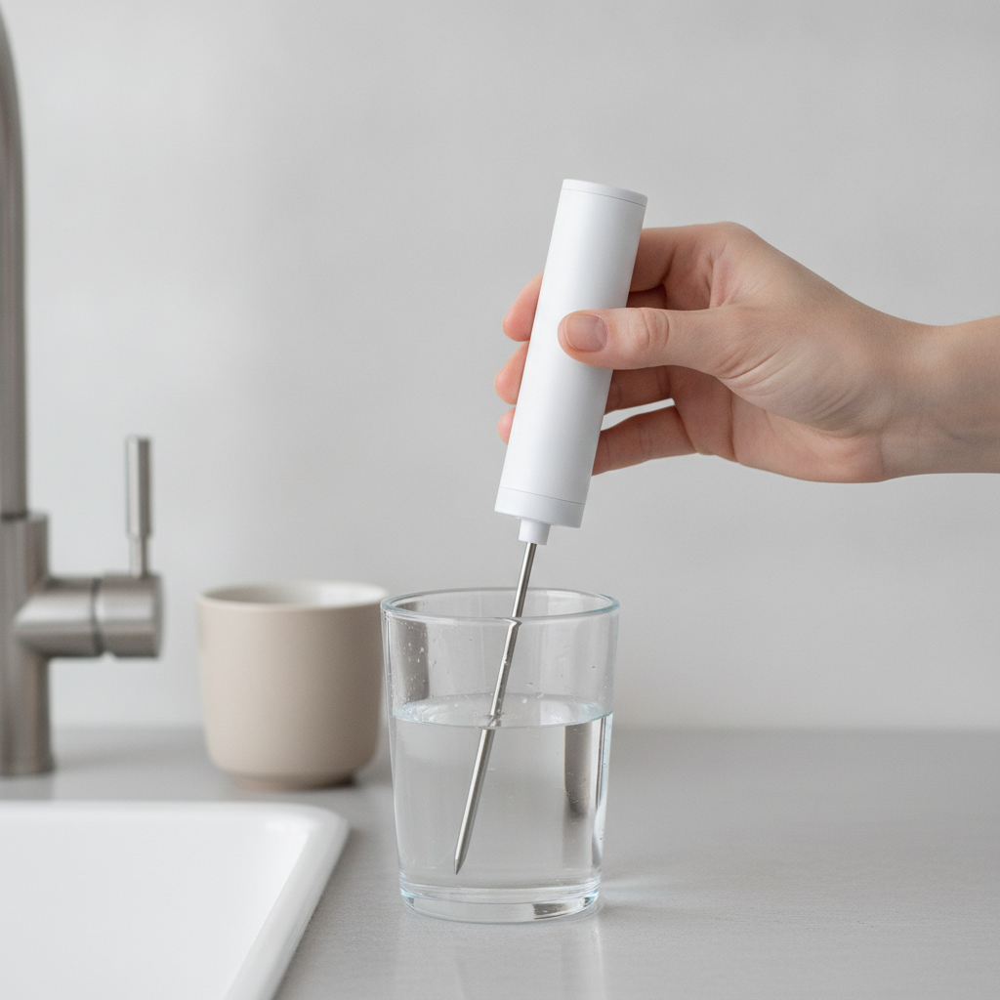
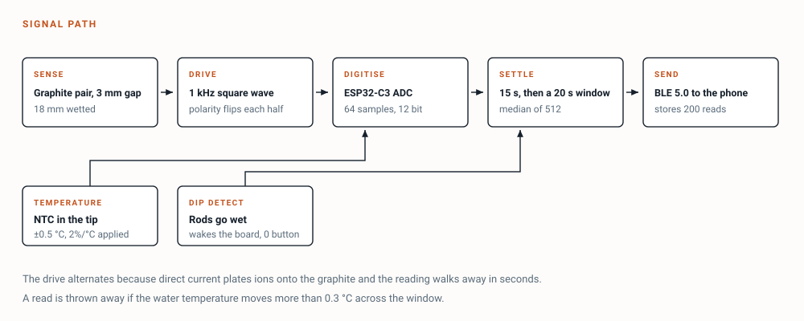
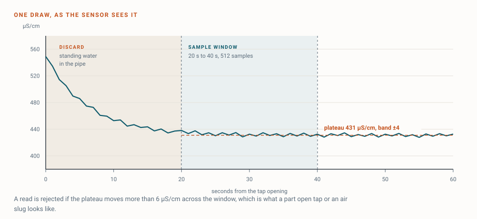
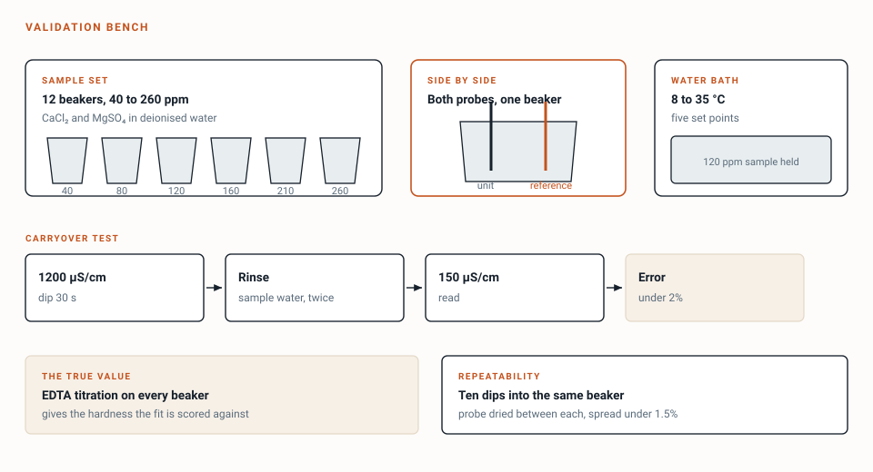
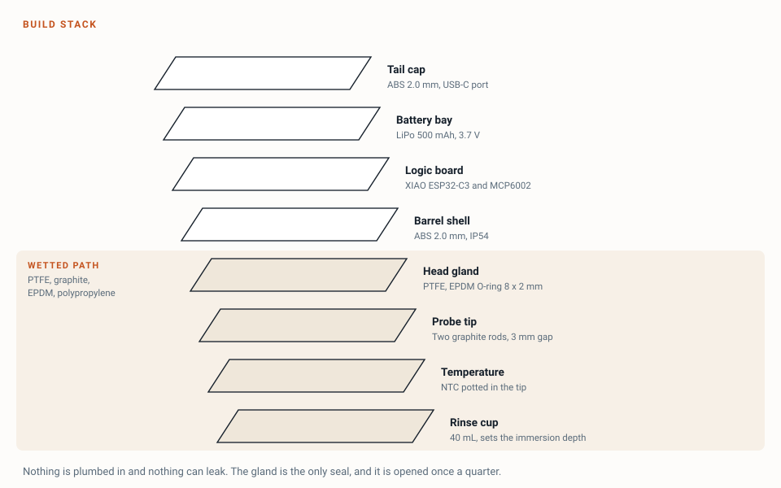
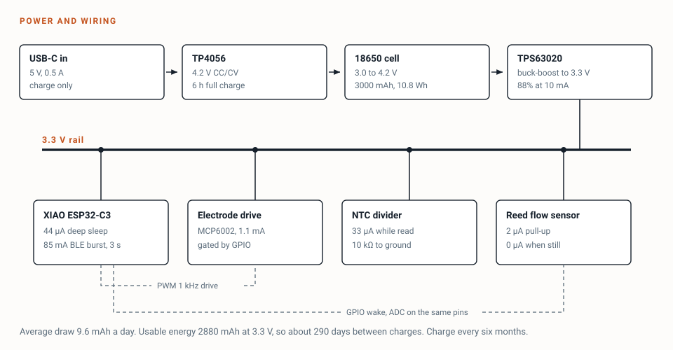

Dip it in a glass, wait half a minute, and the phone has a hardness reading for that tap.
Rechargeable, about $62 in parts, and it has to give the same answer twice.

The rods going wet is what wakes the board, so there is no button to find and nothing draws power in a drawer.

The rods are driven in alternating directions because direct current plates ions onto the graphite and the reading walks away within seconds. The first 15 seconds after the tip enters the water are discarded, because a film of air clings to the rods on the way in and reads high until it clears.
Three references. A calibrated conductivity meter, itself set with 84 and 1413 µS/cm standards. An EDTA titration kit, which gives the true hardness of a sample. A thermometer in the beaker.
The bench is twelve beakers spiked with calcium chloride and magnesium sulphate to cover 40 to 260 ppm. Both probes go into the same beaker, so they see identical water. Five temperature points from 8 to 35 °C on one sample held in a water bath.
Five numbers decide whether it ships. Conductivity within 3% of the reference between 100 and 1000 µS/cm. Hardness within a mean absolute error of 12 ppm against titration, with R² of 0.95 or better. Ten repeat dips into one beaker with a spread under 1.5%. Carryover under 2% going from a 1200 µS/cm sample into a 150 µS/cm sample after two rinses. Reading stable within 2% across the full temperature range on the same water.
Repeatability and carryover are the two a handheld fails on and a plumbed sensor never faces. A device that reads 118 ppm and then 131 ppm on the same glass is not measuring anything.
If the hardness target is missed, the app stops printing a ppm figure and shows a three band label instead: soft, moderate, hard. Every recommendation except the dishwasher salt level still works from the band, so a miss costs one feature rather than the product.


A handheld cannot see flow, so the weekly total and the split across shower, laundry and kitchen have nothing behind them. Either cut them, or let the owner type the household meter reading once a month, which gives a monthly total in 1 litre steps and no per-use split at all. Recommend cutting the split and keeping the monthly total. Inventing a number here would undo the accuracy work above.
Water standing in a pipe overnight reads 20% to 30% high. A plumbed sensor discards that by itself. A handheld cannot, so the app has to run a 30 second flush timer before it will accept a read, and the device rejects any read where the water temperature moves more than 0.3 °C across the window. That is what a glass warming on the counter looks like.
Dip depth sets how much rod is wetted, and the wetted area sets the reading. Immersing 13 mm instead of 18 mm removes 28% of the area, which is twice the whole hardness error budget. A 40 mL cup moulded to stop the barrel at the right depth turns that variable into a constant, and makes the two rinses a routine. It costs $2 and it is missing from the original list.
Two smaller corrections are in the appendix: the 3.3 V rail needs a buck-boost rather than a regulator, and the probe has to store dry, which rules out the glass pH electrode that was on the wish list.
| Part | What it does | Price |
|---|---|---|
| XIAO ESP32-C3 | Reads the rods, talks Bluetooth | $6 |
| Graphite rods and PTFE gland | The wetted electrode pair | $8 |
| NTC 10 kΩ, potted in the tip | Water temperature for compensation | $3 |
| MCP6002 and passives | Buffers the electrode signal | $4 |
| TPS63020 buck-boost | Holds 3.3 V as the cell falls | $6 |
| TP4056 charger | USB-C charging | $2 |
| LiPo 500 mAh and holder | About 600 reads between charges | $5 |
| Printed barrel and tail cap | The body, sealed around the gland | $5 |
| Rinse cup, 40 mL | Sets immersion depth, holds the rinse | $2 |
| RGB status LED | Reading, done, rejected | $1 |
| Calibration set | Two EC standards, EDTA titration kit | $20 |
| One unit | Everything above | $62 |
| Second unit | Shares the calibration set | $42 |
Prices are approximate and exclude shipping. Build two. A second unit is $42 and it is also the only honest way to see whether two devices agree with each other. The cut line for a tighter budget is the printed body, which brings one working unit to about $57 in a length of pipe.

The hard part is deciding whether a plateau is real. A half rinsed probe, a glass warming on the counter and a genuine reading all look similar for the first few seconds. The rule is a plateau that moves less than 6 µS/cm across the window, and tuning that number against real dips is where the time goes.
The safety valve is a ready-made industrial conductivity probe, about $28 with a known cell constant, which fits the same head. If the graphite pair cannot hold 1.5% across ten dips by the end of week 4, switch. That decision has a date on it because a drifting electrode will absorb a whole build if it is allowed to.
The failure nobody plans for is a probe put back in a drawer wet. A film grows on the rods in a fortnight and every reading drifts low. The tip stores dry in the cup, and once a quarter it soaks in citric acid for an hour.
Working notes. Not needed to understand the project.

Excitation: 1 kHz square wave, 3.3 Vpp, polarity reversed every half cycle, series 1 kΩ sense resistor, 100 nF DC block in line with each rod. Gap 3 mm, wetted length 18 mm set by the cup, cell constant fitted at setup rather than assumed.
Sampling: 12 bit ADC, 64 samples per burst, 25 bursts per second. Median of the last 512 samples inside the window. Temperature compensation 2.0% per °C, referred to 25 °C.
Reject rules: plateau movement over 6 µS/cm across the window, water temperature drift over 0.3 °C, temperature outside 4 to 40 °C, or fewer than 380 valid samples. A rejected read shows red on the LED and never reaches the app.
States: SLEEP, WET (rods conduct), SETTLE (15 s), SAMPLE (20 s), STORE, ADVERTISE, DRY, SLEEP. Pulling the tip out during SAMPLE aborts the read rather than storing a short one.
Record: 24 bytes. Timestamp, conductivity in µS/cm, temperature in 0.1 °C, sample count, reject code, tap label index, battery millivolts. Two hundred reads sit in flash, which is a year of normal use.
Transport: BLE 5.0 notify, 3 second advertise window after each read, and a full backfill when the phone next connects. The phone owns the conductivity to hardness slope, so the firmware never needs a calibration update.
Cell 500 mAh at 3.7 V, 1.85 Wh. Buck-boost at 88% gives about 440 mAh usable at 3.3 V.
Idle 44 µA, so 1.06 mAh a day. Six reads at 40 s and 45 mA average, 3.0 mAh a day. Total 4.1 mAh a day, about 105 days. The recommendation to the owner is monthly, which keeps the cell off its low voltage shelf.
One correction from the original list. A 3.3 V regulator drops out near 3.45 V and abandons the bottom third of the cell, so the rail needs a buck-boost. At 500 mAh that is the difference between 105 days and about 70.
Two point conductivity calibration with 84 and 1413 µS/cm standards in the cup, five minutes, once at setup and once a year after that.
One EDTA titration on a glass drawn from the main kitchen tap. Enter the result in the app. The app fits the hardness slope through that point and the measured conductivity, and stores it per household. Re-run when the utility posts a source change, or when a read sits more than 25 ppm off the seven day median.
Each tap in the house is a saved label rather than a separate device. A first read on a new tap is provisional until a second read within 15 ppm confirms it.
Test every part alone before wiring any two together. Board blinks and advertises. Charger holds 4.2 V with the cell disconnected. Buck-boost holds 3.3 V while a bench supply is swept 3.0 to 4.2 V. NTC reads room temperature within 0.5 °C. Wet detect fires on a damp finger before it ever sees a beaker. Electrode pair read in a standard solution, dried, and read again to see what a dry and wet cycle costs.
Twelve concentrations from 40 to 260 ppm, five dips each, against the reference in the same beaker. Five temperatures from 8 to 35 °C at 120 ppm. Ten repeat dips in one beaker for spread. Carryover from 1200 into 150 µS/cm with one, two and three rinses, to prove two is enough. Ten deliberate bad dips, shallow immersion and a warming glass, all of which must be rejected. One full discharge to confirm the endurance number.
It cannot measure calcium and magnesium separately, so it cannot report hardness without the per-home fit.
It cannot see lead, copper, nitrate, PFAS or bacteria. None of those change conductivity enough to be seen, and no one should read a green grade on this device as a safety statement.
It cannot measure free chlorine or pH. A glass pH electrode cannot be stored dry, which a pocket instrument has to do. Those readings come from a monthly test strip photographed by the phone.
It cannot measure how much water the house used. That is the change on this page.
It reads only when someone uses it. There is no background monitoring and no alert when the supply changes overnight.